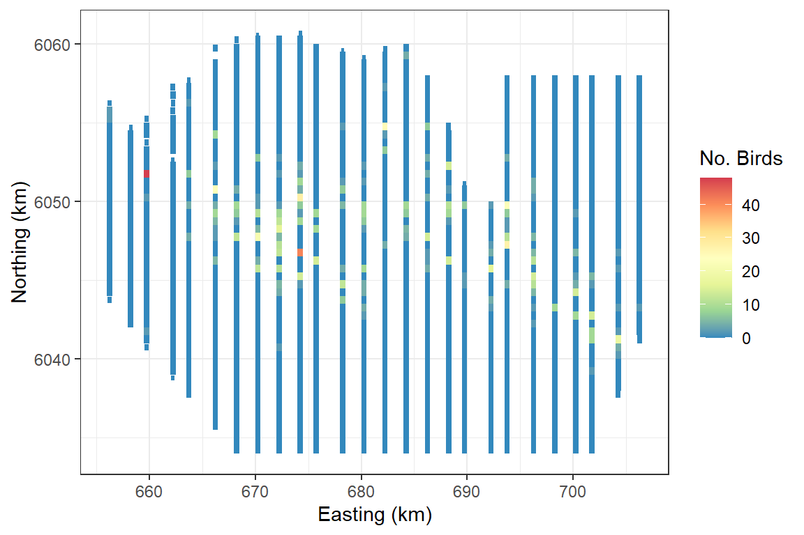
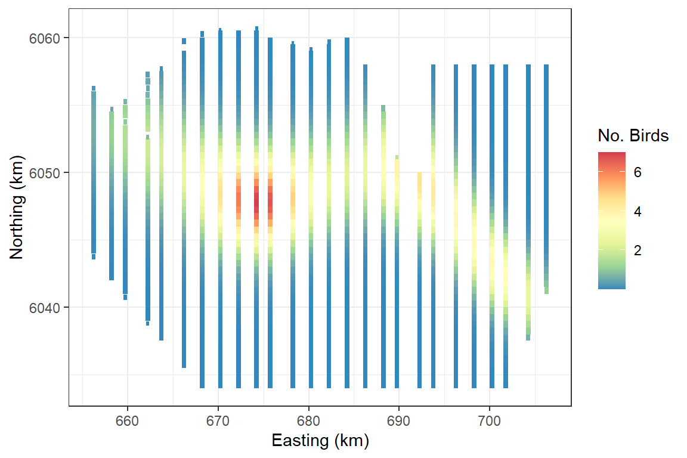

Getting Started with MRSea: Two dimensional smoothing
LAS Scott-Hayward
2023-12-12
Source:vignettes/GettingStarted_2Dsmoothing.Rmd
GettingStarted_2Dsmoothing.RmdIntroduction
The MRSea package was developed for analysing data that
was collected for assessing potential impacts of renewable developments
on marine wildlife, although the methods are applicable to many other
studies as well. For example, these methods have been used for more
general spatial distribution modelling and to analyse GPS tagging data
for home ranges.
The MRSea package primarily fits Generalised Additive
Models (GAMs) using a spatially adaptive model selection framework for
both one and two dimensional covariates using the functions
runSALSA1D and runSALSA2D. These functions
implement the methods of implement the methods of Walker et al. (2010), Scott-Hayward et al. (2013) and Scott-Hayward et al. (2022). In addition,
options are available for a variety of different splines and the
estimation of robust standard errors if residual correlation is
present.
A class of model gamMRSea is created when running either
SALSA 1D or 2D. This retains within the model object information
regarding fitting, such as the splineParam object and the
panel structure (if present). The use of the summary
function on these models returns both raw and robust standard errors,
with the p-values from the models hypothesis test using the
robust standard errors. The robust standard errors are obtained using
the panel structure given (independence is one panel per data point and
is the default if no structure is given).
In addition to the functions required to run the models (which we shall go through below) there are also a variety of associated functions for:
Covariate Checking/Selection:
-
summary.gamMRSea(summary function for models) -
runPartialPlots(to plot 1D partial smooth relationships), -
anova.gamMRSea(for model selection; (ANOVA) for robust standard errors) and
Diagnostics:
-
runACF(to assess residual correlation), -
runsTest(to assess residual correlation) -
plotMeanVar(to assess the mean-variance relationship) -
runDiagnostics(plots of observed vs fitted and fitted vs scaled Pearsons residuals), -
timeInfluenceCheck/runInfluence(assessing the influence of data on precision and predictions), -
plotCumRes(plots of cumulative residuals)
Inference:
-
do.bootstrap.cress.robust(percentile based confidence intervals). -
getDifferences(identifying differences between two prediction surfaces)
Fitting a Simple 2D Model
The data we shall use for this example is from a Danish offshore windfarm and is part of the MRSea package. The data are counts of birds collected along transects over a number of surveys and years. In this first example, we will use all of the data together and assess if there is a relationship between number of birds and sea depth.
# load the data
data("nysted.analysisdata")
wfdata <- filter(nysted.analysisdata, impact==0, season==1)
# load the prediction grid
data("nysted.predictdata")
preddata <- filter(nysted.predictdata, impact==0, season==1)
ggplot(wfdata) + geom_tile(aes(x=x.pos, y=y.pos, fill=response, height=sqrt(area), width=sqrt(area))) +
scale_fill_distiller(palette = "Spectral",name="No. Birds") +
xlab("Easting (km)") + ylab("Northing (km)") + theme_bw()
Fitting a 2D smooth
Set up the initial model with the offset term (if required) and specify the parameters required. Here we add an offset to be the size of the segment associated with the bird counts. In reality, our bird counts are over a particular area so we have counts per unit area.
First up we must create a grid of knots that will be used as candidate knot locations. The locations are a subset of the data locations and are space-filled to have good coverage across the two-dimensional space.
Depending on the size of your data set this could take while and be slightly different every time you run it so I suggest using a seed and perhaps saving the knotgrid as a file.
set.seed(123)
knotgrid<- getKnotgrid(coordData = cbind(wfdata$x.pos, wfdata$y.pos),
numKnots = 300,
plot = TRUE)Plot showing the candidate knot locations in red and the raw data locations in black.
The makeDists function creates two matrices. One for the
distances between each data point and knot point (dataDist)
and one for the distances between each knot point and all other knot
points (knotDist).
Next we specify the parameters needed to run the SALSA2D algorithm which will select the number and location of knots for the smooth of x and y coordinates. Distance matrices (data to knots and knot to knots), a fit statistic and min, max and start knots.
The fitness measure can be one of several options (AIC, BIC, QAIC, QBIC, CV). Here we use QBIC as we have a quasi model and information criterion fitting is faster than cross-validation.
-
knotgridis the grid of candidate knot locations we created. -
startKnotsspecifies the number of knots the SALSA2D algorithm uses to initialise the process. The starting number depends a bit on the size/heterogeneity of the surface. I’d suggest starting with 10 knots to get a feel for the outputs. -
minKnotsspecifies the minimum number of knots to be selected. This must be the same or smaller thanstartKnots -
maxKnotsspecifies the maximum number of knots to be selected. This must be the same or larger thanstartKnots. -
gapspecifies the minimum gap between knots. Usually this is fine to be set at zero but occasionally there can be estimation problems and so a gap can be set (in the units of the covariate).
# make parameter set for running salsa2d
salsa2dlist<-list(fitnessMeasure = 'QBIC',
knotgrid = knotgrid,
startKnots=10,
minKnots=4,
maxKnots=15,
gap=0)- Run SALSA2D to find the appropriate number and location of knots for
the 2D smooth term of
x.posandy.pos. The model inputted to the SALSA2D algorithm is the initial model. If you have a model with univariate smooth terms, you can put in the output best model from the SALSA1D algorithm in this step.The default basis function is thegaussianbut you can also use theexponentialby specifying thebasisparameter.
salsa2dOutput<-runSALSA2D(model = initialModel,
salsa2dlist = salsa2dlist,
d2k=distMats$dataDist,
k2k=distMats$knotDist,
suppress.printout = TRUE)Note that suppress.printout will not print the progress
of runSALSA2D into your workspace but will save the output
to a log file (salsa2d.log) in your working directory. You may
find it helpful to not suppress the print out to begin with so you can
see what is happening.
Use the built in summary function (summary.gamMRSea) to
look at the summary of the model. Note that robust standard errors are
given alongside the raw standard errors and information regarding panels
is at the bottom of the output. If each data point is a panel, then
independence is assumed and the two standard error columns will be
identical.
Model Summary
The object salsa2dOutput has two components:
-
bestModel: the final model -
fitStat: The fitness measure of the best model using the fitness measure specified.
summary(salsa2dOutput$bestModel)
#>
#> Call:
#> gamMRSea(formula = response ~ LRF.g(radiusIndices, dists, radii,
#> aR) + offset(log(area)), family = "quasipoisson", data = wfdata,
#> splineParams = splineParams)
#>
#> Deviance Residuals:
#> Min 1Q Median 3Q Max
#> -3.7456 -1.1390 -0.2942 -0.0308 15.5232
#>
#> Coefficients:
#> Estimate Std. Error Robust S.E.
#> (Intercept) -12.068 1.662 1.662
#> LRF.g(radiusIndices, dists, radii, aR)b1 11.675 1.290 1.290
#> LRF.g(radiusIndices, dists, radii, aR)b2 -35.043 6.107 6.107
#> LRF.g(radiusIndices, dists, radii, aR)b3 20.495 2.604 2.604
#> LRF.g(radiusIndices, dists, radii, aR)b4 12.587 1.602 1.602
#> LRF.g(radiusIndices, dists, radii, aR)b5 52.913 7.905 7.905
#> LRF.g(radiusIndices, dists, radii, aR)b6 -28.821 4.581 4.581
#> t value Pr(>|t|)
#> (Intercept) -7.261 7.05e-13 ***
#> LRF.g(radiusIndices, dists, radii, aR)b1 9.048 < 2e-16 ***
#> LRF.g(radiusIndices, dists, radii, aR)b2 -5.738 1.23e-08 ***
#> LRF.g(radiusIndices, dists, radii, aR)b3 7.871 8.08e-15 ***
#> LRF.g(radiusIndices, dists, radii, aR)b4 7.856 9.08e-15 ***
#> LRF.g(radiusIndices, dists, radii, aR)b5 6.694 3.40e-11 ***
#> LRF.g(radiusIndices, dists, radii, aR)b6 -6.291 4.48e-10 ***
#> ---
#> Signif. codes: 0 '***' 0.001 '**' 0.01 '*' 0.05 '.' 0.1 ' ' 1
#>
#> (Dispersion parameter for quasipoisson family taken to be 8.001567)
#>
#> Null deviance: 4987.6 on 1153 degrees of freedom
#> Residual deviance: 3037.2 on 1147 degrees of freedom
#> AIC: NA
#>
#> Max Panel Size = 1 (independence assumed); Number of panels = 1154
#> Number of Fisher Scoring iterations: 7You can find the number of knots chosen for a variable by querying the spline parameters list in the model object.The two dimensional smooth is always in the first element of the spline parameters list. In this case, 6 knots have been selected.
# How many knots were chosen for depth?
salsa2dOutput$bestModel$splineParams[[1]]$knotPos
#> [1] 54 136 275 111 299 102Fitted surface
ggplot(wfdata) + geom_tile(aes(x=x.pos, y=y.pos, fill=fitted(salsa2dOutput$bestModel), height=sqrt(area), width=sqrt(area))) +
scale_fill_distiller(palette = "Spectral",name="No. Birds") +
xlab("Easting (km)") + ylab("Northing (km)") + theme_bw()
Making predictions
To make predictions, we need to calculate the distances between each
prediction point and each knot point. We can use the
makeDists function again but this time we don’t need the
knot to knot matrix and therefore specify
knotmat = FALSE.
Interaction terms:
The simplest way to specify an interaction term is to add this to the
salsa2dlist object.
salsa2dlist<-list(fitnessMeasure = 'QBIC',
knotgrid = knotgrid,
startKnots=10,
minKnots=4,
maxKnots=15,
gap=0,
interactionTerm="as.factor(impact)")There is an example of this in use in the case study vignette. The limitation to this method is that the knot locations in the different levels (e.g. before and after impact) are in the same locations and only the coefficients are permitted to change. This may not always be a sensible option especially if the spatial range of the different factor levels varies. In this case, there is an alternative which allows the locations to differ. An example of this is in the interactions vignette.
Further information:
For information on:
- Other types of 2D spline
- Model Diagnostics
- Distance Sampling
- Marine Renewables baseline characterisataion Case Study.
- More complex interactions.
- Using non Euclidean distances to measure the similarity between points. For example, using geodesic distances to represent “as the fish swims” rather than “as the crow flies”. This takes into account distances around exclusion areas such as coastlines or lakes. See here